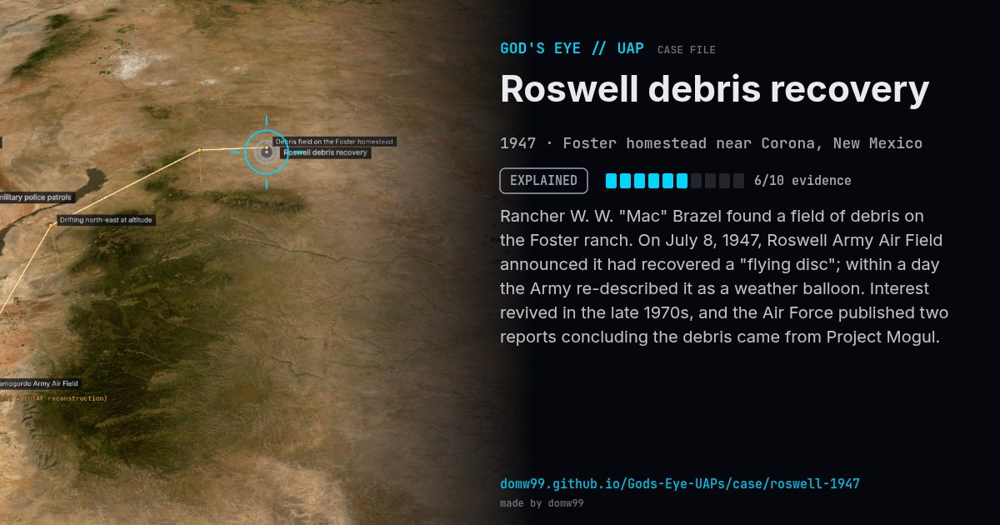

Roswell debris recovery
EXPLAINED

Rancher W. W. "Mac" Brazel found a field of debris on the Foster ranch. On July 8, 1947, Roswell Army Air Field announced it had recovered a "flying disc"; within a day the Army re-described it as a weather balloon. Interest revived in the late 1970s, and the Air Force published two reports concluding the debris came from Project Mogul.
Explanation
The U.S. Air Force reports of 1994–1997 identified the debris as a Project Mogul balloon train (NYU Flight 4) launched from Alamogordo Army Air Field to listen for Soviet nuclear tests, and later "alien body" stories as conflations with 1950s dummy drops.
What was seen
Shape: Debris of foil, rubber, sticks and tape
Witnesses: Rancher Mac Brazel; 509th Bomb Group officers
Duration: —
Browse
- United States
- 1940s
- Explained
- Tracked object events
- Official government documents
- Military witnesses
- Photographs
- Physical traces